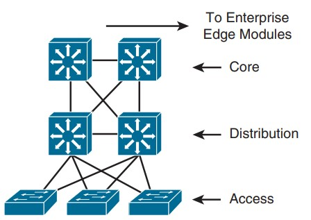

Modèles hiérarchiques
La conception hiérarchique des réseaux est un cadre structurel qui divise un réseau en plusieurs couches distinctes, chacune ayant un ensemble spécifique de fonctions. Cette approche simplifie la conception, la gestion et la croissance des réseaux.
En termes simples, elle consiste à répartir les tâches réseau entre différentes couches de manière organisée, plutôt que de tenter de tout gérer au sein d'une seule plateforme ou d'un seul appareil complexe.
Note
Ces modèles sont applicables à la fois aux réseaux LAN et aux réseaux WAN.
Avantages du modèle hiérarchique
Les avantages de la conception hiérarchique incluent des économies de coûts, une facilité de compréhension, une croissance modulaire du réseau et une meilleure isolation des pannes.
| Éléments | Détails |
|---|---|
Économies de coûts |
Les économies de coûts proviennent de la répartition des fonctions réseau sur des appareils spécialisés, ce qui évite d'investir dans un seul appareil coûteux et complexe. Cela réduit les coûts et optimise l'utilisation de la bande passante. |
Facilité de compréhension |
La facilité de compréhension résulte de la simplification de chaque couche, ce qui réduit les coûts de formation et de gestion du personnel. |
Croissance modulaire |
La conception modulaire permet une croissance facile du réseau en ajoutant simplement de nouvelles couches ou en répliquant les éléments de conception existants. |
Amélioration de l'isolation des pannes |
Enfin, l'isolation des pannes est améliorée car chaque couche est facilement identifiable, facilitant la localisation des problèmes en cas de panne. |
Note
Elle est également essentielle pour l'efficacité des protocoles de routage dynamiques tels qu'OSPF et EIGRP : Ils peuvent résumer les routes (route summarization), c'est-à-dire combiner plusieurs routes similaires en une seule, ce qui économise de la bande passante et simplifie le traitement de l'information de routage.
Conception de Réseau Hiérarchique
| Couche | Fonction |
|---|---|
Noyau (Core) |
Transport rapide (fast transport) entre les switches de distribution. |
Distribution |
Connectivité basée sur des politiques. |
Accès |
Accès des groupes de travail (workgroup) et des utilisateurs au réseau - Endpoint. |
